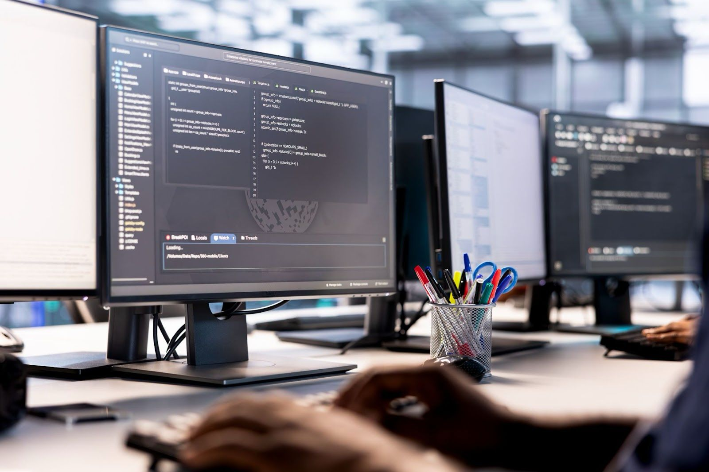

Struktur organisasi Program Studi Teknik industri
Agung Prabowo, S.Kom., M.Kom.
Ketua Program Studi

Dr. Delima Sitanggang, S.Kom., M.Kom.
Sekretaris Program Studi
Program Studi Teknik Industri UNPRI menawarkan konsentrasi dalam bidang Supply Chain & Optimization. Konsentrasi ini dirancang untuk mempersiapkan mahasiswa menghadapi tantangan dalam manajemen rantai pasok dan optimasi proses industri.
Lulusan Program Studi Teknik Industri juga dapat berkontribusi dalam meningkatkan produktivitas dan keberlanjutan di berbagai sektor industri. Dengan bekal pengetahuan dan keterampilan yang mendalam, lulusan Teknik Industri siap menjadi agen perubahan dalam dunia industri, mendorong inovasi, dan menciptakan sistem yang lebih efisien dan berkelanjutan untuk masa depan.
Menjadi program studi unggulan dalam rekayasa, perancangan, dan pengembangan sistem rantai pasok industri kesehatan yang inovatif, adaptif, berkelanjutan, serta berwawasan socio-technopreneurship pada tahun 2030.
Program studi ini telah mendapatkan akreditasi dengan peringkat "Baik Sekali" dari BAN-PT.
Pembelajaran berfokus pada capaian dan kompetensi lulusan yang relevan dengan kebutuhan industri.
Fokus pada manajemen rantai pasok dan optimasi proses industri kesehatan dan manufaktur.
Menyediakan ruang kuliah multimedia, perpustakaan digital terakreditasi, convention hall terbesar di Sumatera Utara, mall kampus, hingga cafe di rooftop lantai 23 gedung kampus.
Kuliah lapangan ke industri manufaktur dan kesehatan.
Mengintegrasikan pendidikan, teknologi, kewirausahaan, dan kepedulian sosial.
Akrediatasi Program Studi
Baik Sekali
Berdasarkan SK. No. 2123654364
Durasi Studi dan Gelar
4 tahun (8 Semester) dengan gelar S.T. (Sarjana Teknik)
Lulusan Program Studi Teknik Industri UNPRI memiliki peluang karir yang luas, seperti :
Ketua Program Studi
Sekretaris Program Studi
Berita Terkini
Baca Berita Lainnya
Senin, 20 Oktober 2025
Kampus Terbaik dan Unggul....
Sinergi Pendidikan dan Pemerintah Daerah: UNPRI Perluas Kolaborasi Strategis di Kabupaten Rokan ....
Senin, 20 Oktober 2025
Kampus Terbaik dan Unggul....
Sinergi Pendidikan dan Pemerintah Daerah: UNPRI Perluas Kolaborasi Strategis di Kabupaten Rokan ....

Senin, 20 Oktober 2025
Kampus Terbaik dan Unggul....
Sinergi Pendidikan dan Pemerintah Daerah: UNPRI Perluas Kolaborasi Strategis di Kabupaten Rokan ....
Program Studi Teknik Industri UNPRI menjalin kemitraan dengan berbagai institusi dan industri untuk mendukung pengembangan akademik dan profesional mahasiswa.


Wujudkan mimpi bersama Fakultas Sains dan Teknologi — tempat di mana ide-ide cemerlang tumbuh menjadi inovasi yang berdampak. Daftar sekarang!
 }})